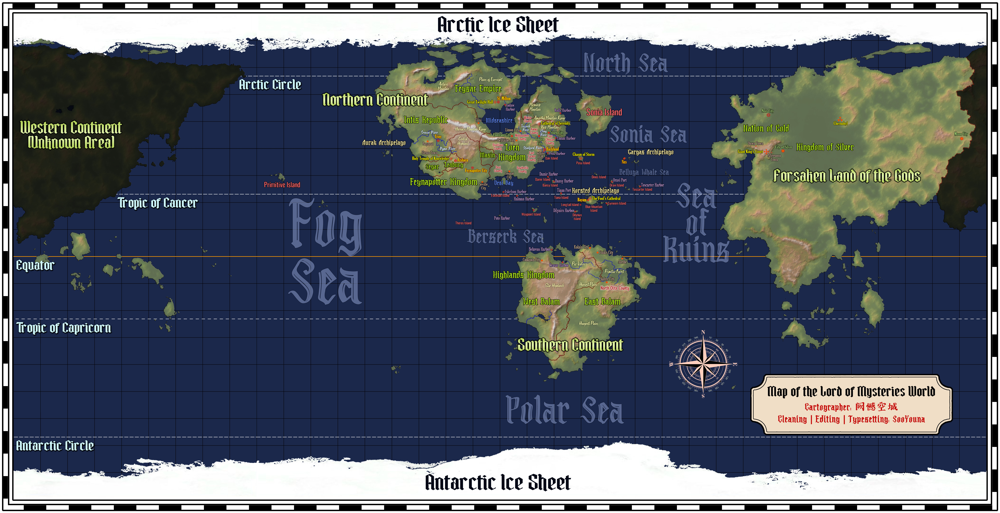

THE WORLD OF LOTM
Карта живого мира
НЕОФИЦИАЛЬНЫЙ АТЛАС
09:00День 1
День · мир в движении
АТЛАС HD ·ДНЕВНОЙ СВЕТ
N✧S
100%
Морской рейс⚓ Порты Железная дорогаКлетка 1500 км² · сторона ≈ 38,7 км
Перетаскивайте карту · Колесо / + − для масштаба